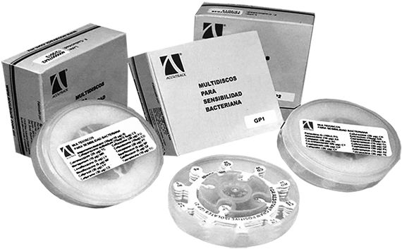

Clairo combi
Discos de sensibilidad bacteriana combinada

DESCRIPCIÓN: Discos de sensibilidad bacteriana combinada hechos con papel filtro esterilizado con una graduación especial. Tienen 14 brazos de proyección y la punta de cada uno de ellos está impregnada con una cantidad exacta y específica de antibiótico o agente quimioterapéutico, que se ha secado al vacío a bajas temperaturas. El antibiótico o agente quimioterapéutico y la concentración que se impregna en la punta de cada uno de los brazos de los CLAIRO COMBI DISCS están claramente identificados con códigos alfanuméricos y figuras impresas en cada uno de ellos. Es por eso que los CLAIRO COMBI DISCS hacen posible que se pueda realizar una prueba de sensibilidad a cierto tipo de microorganismos en un solo paso para 14 diferentes antibióticos. Los CLAIRO COMBI DISCS presentan las combinaciones más diversas y aceptadas de antibióticos.
PRINCIPIO: La prueba de difusión de disco se basa en el hecho de que, en cierto antibiótico, el tamaño de la zona de inhibición es inversamente proporcional al MIC (determinado por método de disolución) de la variedad que va a analizarse cuando las condiciones de la prueba son constantes. La prueba de sensibilidad bacteriana es un método rápido y simple para analizar la sensibilidad de las bacterias a diferentes antibióticos y agentes quimioterapéuticos.
MATERIAL REQUERIDO PERO NO INCLUIDO
1. Agar de soya tripticasa (o cualquier otro medio de cultivo apropiado).
2. Agar de Muller Hinton (MHA) (pH 7.3 ± 0.1).
3. Agua salina esterilizada o medio de cultivo.
ALMACENAMIENTO Y ESTABILIDAD
Todos los COMBI DISCS permanecen estables a temperaturas de 2 a 8ºC hasta la fecha de caducidad que se indica en cada una de las etiquetas individuales.
MEDIDAS DE PRECAUCIÓN
1. Antes de abrir la caja permita que el contenedor adquiera la temperatura ambiente para prevenir que la humedad se condense.
2. Tan pronto como se termine de aplicar la prueba cierre la tapa e introduzca inmediatamente el contenedor al refrigerador.
3. El tamaño de la caja de Petri deberá ser mínimo de 90 mm, aunque es preferible utilizar uno de 100 mm.
PROCEDIMIENTO
1. Preparación de las cajas de Petri
El agar estéril Muller Hintor (MHA) (pH 7.3 ± 0.1) se vacía en diferentes cajas de Petri que se colocan sobre una superficie plana. La profundidad del líquido deberá ser aproximadamente de 4 mm. Una vez que el medio se haya solidificado, las cajas de Petri se secan por 30 minutos en un incubador (35 a 37°C) para remover el exceso de humedad de la superficie. Al verter el medio en las cajas de Petri, se debe agregar de manera aséptica 5% de sangre esterilizada de oveja al MHA para analizar el Streptococcus y cualquier otro microorganismo.
2. Preparación del medio de cultivo
I. Para las pruebas de sensibilidad utilice únicamente cultivos asépticos. Realice una tinción de Gram antes de preparar el medio de cultivo.
II. Seleccione de 4 a 5 colonias similares y colóquelas en un tubo que contenga 5 ml de agar de soya tripticasa (u otro medio de cultivo celular) con la ayuda de una asa metálica.
III. Incube el cultivo de 2 a 5 horas de 35-37°C para obtener una turbiedad moderada.
IV. Diluya el cultivo de organismos vivos con un líquido aséptico o salino para obtener una turbiedad equivalente a la del estándar de sulfato de bario (equivalente a la mitad de la densidad de la medida de McFarland Núm. 1), la cual se prepara añadiendo 0.5 ml de 1.175% de solución BaCl2H2O a 99.5 ml de 0.36 NH2SO2. Los cultivos de toda una noche de los organisos aerobios/no nocivos generalmente crecen demasiado como para ser utilizados sin diluir.
Cuando por cuestión de tiempo no se permita el desarrollo de un cultivo lo suficientemente turbio, las colonias pueden colocarse directamente en una pequeña cantidad de solución salina o líquido aséptico, lo cual se puede considerar como si se hubiera diluido en una turbiedad equivalente a la mitad de la medida Mc Farrland Núm. 1. Para prevenir que el cultivo siga creciendo, el medio de cultivo diluido y estandarizado no deberá permanecer en las cajas de Petri por más de 15 a 20 minutos antes de que éstas se hayan inoculado.
3. Inoculación
I. Sumerja un hisopo estéril en el medio de cultivo diluido y gírelo mientras ejerce presión en la pared superior del tubo, arriba del nivel del líquido para poder retirar o remover el exceso de cultivo.
II. Siembre en la superficie de agar de la caja de Petri en tres direcciones haciendo girar la caja de Petri 60° entre cada una de las siembras.
III. Vuelva a colocar la tapa de la caja de Petri y manténgalo a temperatura ambiente de 5 a 10 minutos para que se seque el medio de cultivo; es importante no exceder los 15 minutos de espera. Para que los resultados sean más exactos es preferible un desarrollo confluente.
4. Utilización de los CLAIRO COMBI DISCS
Retire uno de los COMBI DISCS de su contenedor con la ayuda de pinzas esterilizadas con fuego y colóquelo cuidadosamente en la superficie del medio de cultivo. Finalmente presiónelo ligeramente con la ayuda de pinzas para que exista un contacto completo con la superficie del medio. Permita que las cajas de Petri permanezcan a temperatura ambiente por 30 minutos (tiempo de predifusión) antes de continuar con el siguiente paso.
5. Incubación
Incubar las cajas de Petri de 16 a 18 horas a una temperatura de 35 a 37°C.
6. Lectura de las zonas de inhibición
Mida el diámetro de la zona de inhibición al final del periodo de incubación (si las placas muestran un crecimiento apropiado podrán leerse después de 6 a 8 horas en situaciones clínicas urgentes). Mida únicamente aquellas zonas en las que se muestra una inhibición completa y registre el diámetro de la zona redondeando al milímetro más cercano. Se deberá repetir la prueba si sólo se desarrollan colonias individuales y si el medio de cultivo no presenta crecimiento bacteriano.
7. Control de calidad
Es muy importante que se consideren los parámetros de calidad cuando se utilizan los COMBI DISCS de tal forma que se puedan obtener los resultados correctos y la reproducción sea la adecuada. Para poder asegurar un control de calidad de la difusión de un disco, el National Committee for Clinical Laboratory Standars (NCCLS) ha recomendado las siguientes variedades de referencia ATCC: E. coli ATCC 25922, S. areus ATCC 25923, Ps. aeruginosa ATCC 27853, H. influenzae ATCC 49247, S. pneumoniae ATCC 49619, y N. gonorrhoeae ATCC 49226. Cuando estas variedades producen resultados que se cumplen con los límites especificados (tal como las directrices NCCLS), los resultados de la prueba de susceptibilidad son considerados válidos.
INTERPRETACIÓN
A pesar de que existe cierta correlación entre el tamaño de la zona de inhibición y la susceptibilidad del microorganismo al antibiótico, esta última es una función de muchas variables, por ejemplo, densidad del medio de cultivo, la profundidad del medio, grado de difusión del antibiótico, etc. El tamaño de la zona de inhibición en la que el organismo se puede considerar resistente, intermedio o sensible se da en la gráfica de interpretación del tamaño de la zona de inhibición como se refiere en la literatura.
PRESENTACIÓN
|
Producto |
Empaque |
Código |
|
Para Gram Negativos (GN1) que contengan los siguientes antibióticos*: NF, AT, CX, FR, NA, FU, CR, GM, AK, CL, OF, CZ, FX, CN. |
20 discos |
13CD101-20 |
|
Para Gram Negativos resistentes (GN2) que contengan los siguientes antibióticos*: TC, MR, LV, MF, FP, CE, FO, CO, CS, PT, SP, GF, IS, TO. |
20 discos |
13CD102-20 |
|
Para Gram Positivos (GP1) que contengan los siguientes antibióticos*: PG, AX, AC, CT, CP, CF, CR, ER, CK, CL, OF, PC, AZ, TE. |
20 discos |
13CD103-20 |
|
Para Gram Positivos resistentes (GP2) que contengan los siguientes antibióticos*: CM, TP, LF, MF, AS, CG, CD, RO, CL, LN, SP, GF, LI, VM. |
20 discos |
13CD104-20 |
* Para mayor información por favor consulte la gráfica interpretativa de diámetro de zonas.
COMBI DISCS
Pruebas de sensibilidad bacteriana
Discos de sensibilidad bacteriana combinados para 14 diferentes antibióticos:
• Discos Combi GP1 y GN1 para la primera línea de antibióticos:
– GP1 para bacterias Gram positivas.
– GN1 para bacterias Gram negativas.
• Discos Combi GP2 y GN2 para bacterias altamente resistentes:
– GP2 para bacterias Gram positivas.
– GN2 para bacterias Gram negativas.
SENSIDISCOS GRAM NEGATIVOS (GN1)
Norfloxacino (10 µg) NF
Azteonam (30 µg) AT
Cefotaxima (30 µg) CX
Ceftriaxona (30 µg) FR
Ácido nalidíxico (30 µg) NA
Nitrofurantoína (300 µg) FU
Cefuroxima (300 µg) CR
Gentamicina (10 µg) GM
Amikacina (30 µg) AK
Ciprofloxacino (5 µg) CL
Ofloxacino (5 µg) OF
Ceftazidima (30 µg) CZ
Cefixima (5 µg) FX
Cefdinir (5 µg) CN
SENSIDISCOS GRAM NEGATIVOS RESISTENTES (GN2)
Cotrimoxazol (25 µg) TC
Meropenem (10 µg) MR
Levofloxacino (5 µg) LV
Moxifloxacino (5 µg) MF
Cefprozil (30 µg) FP
Cefpiroma (30 µg) CE
Ceftizoxima (30 µg) FO
Cefpodoxima (10 µg) CO
Cefoperazona-sulbactam (75 µg + 25 µg) CS
Teicoplanina (30 µg) PT
Esparfloxacino (5 µg) SP
Gatifloxacino (5 µg) GF
Imipenem / Cilastatina (10 µg + 10 µg) IS
Tobramicina (10 µg) TO
SENSIDISCOS GRAM POSITIVOS (GP1)
Penicilina-G (10IU) PG
Amoxicilina (10 µg) AX
Cefalotina (30 µg) AC
Cotrimoxazol (25 µg) CT
Cefalexina (30 µg) CP
Cefazolina (30 µg) CF
Cefuroxima (30 µg) CR
Eritromicina (15 µg) ER
Cloranfenicol (30 µg) CK
Claritromicina (15 µg) CL
Ceftizoxima (30 µg) OF
Cefaloxina (30 µg) PC
Azitromicina (15 µg) AZ
Tetraciclina (30 µg) TE
SENSIDISCOS GRAM POSITIVOS RESISTENTES (GP2)
Clindamicina (2 µg) CM
Teicoplanina (30 µg) TP
Lomefloxacino (10 µg) LF
Moxifloxacino (5 µg) LF
Ampicilina / Sulbactam (10 µg + 10 µg) AS
Cefaclor (30 µg) CD
Roxitromicina (30 µg) RO
Claritromicina (15 µg) CL
Lincomicina (15 µg) LN
Esparfloxacino (5 µg) SP
Gatifloxacino (5 µg) GF
Linezolid (30 µg) LI
Vancomicina (30 µg) VM
DATOS COMPLEMENTARIOS: Para mayores informes comunicarse a:
ACCUTRACK, S.A. DE C.V.
Teléfonos: (55) 5524-4481, 5524-2644, 5524-4575
e-mail: ventas@accutrack.com.mx
www.accutrack.com.mx